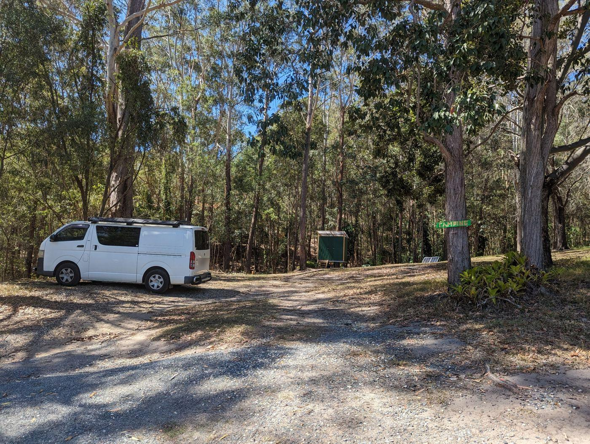

How long will a 100Ah battery run my fridge?

It's Friday arvo, the fridge is packed, and you've got a 100Ah battery and no plans to drive till Sunday. Will the drinks still be cold?
The short version
- A typical 12V compressor fridge of 35 to 50 litres uses about 20 to 30Ah a day, depending mostly on how hot it is.
- A 100Ah lithium battery runs that fridge on its own for about three days in summer with no charging. A 100Ah AGM gets you closer to two.
- Pre-cool it at home, keep it full, keep it in the shade and set it to 3 to 4°C. Those four habits save more power than anything you can buy.
The fridge is nearly always the biggest power user in a van, caravan or 4WD, and a flat battery means warm milk. Here's what a 12V fridge really uses, and whether yours will make it to Sunday.

Our Hiace fridge (a Dometic CFF45, on a Kings 115Ah AGM) kept beeping. We bought a new fridge, then a new battery, and tested every connection before we worked out the real problem: the solar on the roof couldn't keep up. If your fridge is complaining, check what's charging the battery before you replace anything.
Why a fridge doesn't use its label figure all day
A compressor fridge (the common type in camping fridges like Dometic, Engel and Bushman) works like the air conditioner at home. It runs hard until the inside is cold enough, switches off, then switches back on when the temperature creeps up. It takes sips, not one long gulp.
The share of time the compressor runs is called the duty cycle. If it runs 20 minutes out of every hour, that's a duty cycle of about a third.
While it's running, a typical fridge draws about 3 to 4 amps, but averaged over a day it's closer to 1 amp for a medium fridge, according to Jaycar's testing. Engel lists its 40L fridge as drawing anywhere from 0.5 to 3 amps, because its compressor speeds up and slows down as needed. A bigger number in the manual is usually the most it can draw, used for choosing cables and fuses, not what it uses all day.
What the "per hour" figures mean
Many fridges list power use as Ah/h (amp-hours per hour), which is just the average current. Multiply it by 24 to get amp-hours per day.
For example, Dometic rates its CFX3 55 at 1.1Ah/h. Times 24, that's about 26Ah a day. But read the fine print: Dometic tests at 32°C outside and 4°C inside. Bushman tests at 25°C. Lab tests keep the lid shut, so treat them as best case.
In real life, five things push the number up or down:
- Heat. The biggest one by far. Jaycar notes a fridge might barely run in a Tasmanian winter but run almost non-stop in a Darwin summer.
- Size. A bigger box leaks more cold.
- How full it is. Cold food and drinks hold the cold. Air doesn't.
- How often you open it. Every opening lets cold air out and warm air in.
- Airflow. Blocked vents make it work harder.
How much a fridge uses in a day
These are the figures our Power Planner uses, next to some manufacturer test figures. Our numbers sit a little above the lab ones on purpose, to allow for a lid that gets opened and food that goes in warm.
| Fridge size | Summer (our estimate) | Winter (about 30% less) | Manufacturer test figures, for comparison |
|---|---|---|---|
| Small, 15 to 30L | About 18Ah a day | About 13Ah a day | Varies a lot by brand and size, so check the spec sheet |
| Medium, 35 to 50L | About 28Ah a day | About 20Ah a day | Dometic CFX3 35: about 24Ah (32°C). Bushman DC50X: about 24Ah (25°C) |
| Large, 55 to 75L | About 38Ah a day | About 27Ah a day | Dometic CFX3 55: about 26Ah (32°C). Dometic CFX3 75DZ, both sides as fridge: about 34Ah (32°C) |
| Fridge-freezer, 80 to 100L | About 50Ah a day | About 35Ah a day | Dometic CFX3 100, as a fridge: about 37Ah (32°C) |
Estimates for a 12V system. Manufacturer figures are their published per-hour ratings multiplied by 24, tested with the lid closed. Your fridge will vary with heat, how full it is and how often you open it.
Worked example: a 50L fridge, a 100Ah battery, no charging
Say you leave Friday afternoon, camp with no sun or power, and head home Sunday afternoon: about two full days. Your medium fridge uses about 28Ah a day in summer.
- Fridge for the weekend: 28Ah x 2 days = about 56Ah.
- 100Ah lithium: you can use about 90% of it, so about 90Ah. After the weekend you'd still have about 34Ah left. Comfortable.
- 100Ah AGM: you should only use about half, so about 50Ah. The fridge alone needs 56Ah, so you'd run it past half and shorten its life.
Now add the small stuff. Four LED lights for the evening, two phones and a 12V fan running overnight add roughly 20Ah a day. That takes the weekend to about (28 + 20) x 2 = 96Ah, which is more than the lithium's 90Ah. So with a fan and zero charging, a 100Ah lithium falls just short in summer. In winter the fridge uses about 30% less, so the weekend comes to about 80Ah and it fits.
The easy fix is a little charging: an hour or two of driving through a DC-DC charger, or some solar. See DC-DC chargers explained and How much solar do I need?, or read Lithium vs AGM.
Ten ways to make your fridge sip less
- Pre-cool at home on 240V. Turn it on the day before and load it with cold food. Cooling down from room temperature is the hardest work it does.
- Keep it full. Fill gaps with bottles of water. They hold the cold when the lid opens.
- Use an insulated cover. A padded transit bag keeps heat out.
- Find shade. Out of the sun and out of a closed, baking car. Snowys notes a trailer toolbox can reach about 65°C inside on a warm day.
- Give it airflow. Keep the vents clear and leave the gap your manual asks for (Dometic's CFX3 manual gives a minimum). In a tight cupboard or toolbox, a small vent or fan helps.
- Set it to 3 to 4°C, not colder. That's cold enough for food. Every degree colder makes it work harder.
- Fridge mode, not freezer mode. Freezing uses a lot more power. On Dometic's 75L dual-zone, turning one side into a freezer takes it from about 34Ah to about 73Ah a day, more than double.
- Open it less. Know what you want and grab it in one go. Keep drinks in a separate esky (cooler box) if they're in and out all day.
- Never put warm food in. Let leftovers cool first, as Dometic's manual suggests.
- Use good, short cables. Thin leads and plug splitters lose voltage on the way. That can trip the low-voltage cut-out early.
The low-voltage cut-out: which setting?
Most fridges have battery protection that switches off when the battery voltage drops too low, then back on once it recovers. Many, like Dometic's CFX3 range, offer Low, Medium and High settings, each switching off at a different voltage. Your fridge's manual lists the exact numbers.
- Running off your car's starting battery: use High or Medium, so the car still starts.
- Lithium house battery: use Low. A lithium battery holds a steady voltage until it's nearly empty, and its own built-in protection (the BMS, or battery management system) stops it going too flat. Higher settings can switch the fridge off early, especially with long or thin cables.
- AGM house battery: the cut-out is a last line of defence, not a half-full alarm. Even the Medium setting lets an AGM go well past half. A battery monitor that shows how full you are is the better guard.
What about 3-way fridges?
A 3-way (absorption) fridge, common in older caravans, runs on gas, 240V or 12V. On gas it's great: Bushman says its 3-way model runs up to a month on a 9kg bottle. On 12V it's hungry. That same fridge draws 12.5 amps on 12V, and it doesn't cycle off like a compressor fridge. Left on 12V for a full day, that's about 300Ah, several times what a 100Ah lithium can give. Use 12V only while you're driving, and switch to gas when you park up.
Pick your fridge size, season and the rest of your gear, and the Power Planner shows how many days your battery will last and what charging you need.
Check my fridge and batteryor grab a ready-made kit
Kiran, Mitch & Ziggy
We last checked this page in November 2026. Spotted something that's changed, or got a question we didn't answer? Tell us, we read every message.
Quick answers
How much power does a 12V camping fridge use?
A typical 35 to 50 litre compressor fridge uses about 20 to 30Ah a day, depending mostly on how hot it is.
How long will a 100Ah battery run a fridge?
A 100Ah lithium battery runs a typical 35 to 50 litre fridge on its own for about three days in summer with no charging. A 100Ah AGM gets you closer to two.
How can I make my fridge use less power?
Pre-cool it at home, keep it full, keep it in the shade and set it to 3 to 4°C. Those four habits save more power than anything you can buy.
Sources
- Dometic CFX3 35 specifications
- Dometic CFX3 55 specifications
- Dometic CFX3 75DZ specifications
- Dometic CFX3 100 specifications
- Dometic CFX3 series operating manual (battery protection, ventilation, energy saving)
- Bushman product brochure (power use and 3-way fridge figures)
- Engel Australia 40L fridge-freezer specifications
- Jaycar: fridge power consumption
- Snowys: 10 ways to power your 12V fridge for longer
Keep reading
 Start here
Start hereThe basics of off-grid power, simplified
Battery, solar, DC-DC charger and inverter, explained without the jargon. Batteries
BatteriesLithium vs AGM: which battery should you get?
The real difference, what it means for size, weight and cost, and when AGM still makes sense. Solar
SolarHow much solar do I need? By state and season
Why a Hobart winter and a Darwin winter need very different setups, with a table for every state. Charging
Charging